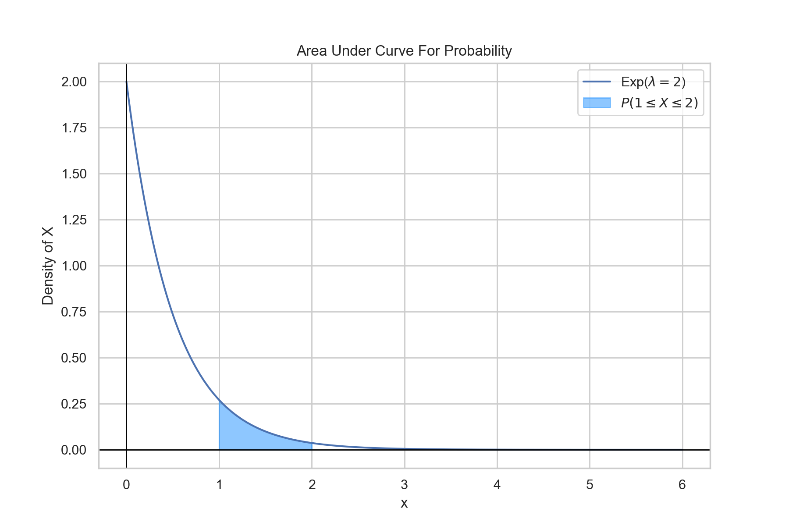
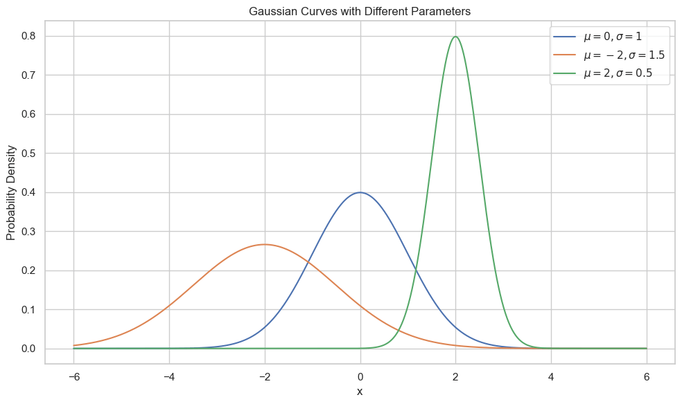

import matplotlib.pyplot as plt
from matplotlib_venn import venn2
# Create a new figure
plt.figure(figsize=(10, 7))
# Create a sample set A and its subset B
A = {1, 2, 3, 4, 5, 6, 7, 8, 9}
B = {2, 3, 5, 7}
# Create a Venn diagram
venn = venn2([A, B], set_labels=('Set A, $\{x\in\mathbb{N}^+: xlt 0\}$', 'Subset B, $\{x\in P: x\lt10\}$'))
# Highlight the subset
venn.get_label_by_id('10').set_text(', '.join(map(str, A - B)))
venn.get_label_by_id('11').set_text(', '.join(map(str, A & B)))
venn.get_patch_by_id('11').set_color('purple')
venn.get_label_by_id('01').set_text('') # Since B is a subset, this region is empty
# Add a title and show the figure
plt.title("Prime Numbers are a Proper Subset of the Natural Numbers")
plt.show()
Probability, Statistics, and Entropy
Probability
Defining terms
Before we show any equations, we must define some terms and cover some basics of set theory. Let A and B be events. In this textbook, when we use the term event, we will mean it to be an outcome or set (group) of possible outcomes. We will also denote \(\Omega\) to be the set of all possible outcomes.Element
An element is the term for the basic member of a set. This will represent a specfic outcome for most of our purposes.Probability and Measure
P(A) is the probability of event A occurring. This corresponds to the probability of having any outcome in the set of outcomes included in A. You can think of the probability of A as being a measure of the "size" of the set A (size does not refer to the number of elements in this analogy). The probability of each element need not be the same.Subset
\(A \subseteq B\) means that A is a subset of B. This means that all the outcomes included in A are also included in B. However, B could contain additional outcomes that are not in A.- An example would be if A were rolling a 3 on a die and B were rolling an odd number on a die.
- It is possible for A and B to be the same set of outcomes, which is captured by the underline in the notation. The notation for subset and proper subset is similar to comparing two real numbers. The open end points to the "larger" thing and an underline allows for equality to be included in the comparison.
- If we wish to state that A is a subset of B, but A is not the same as B, we will use the notation \(A \subset B\) and call A a proper subset of B.
- If \(A \subset B\), then \(P(A)\leq P(B)\)
Union
\(A\cup B\) is the union of A and B. This is the set of outcomes that are in A and/or B. This will be a set that is larger or equal in size than either A or B. The \(\lor\) can also be seen instead of \(\cup\), especially in logic.- If A is the set \(\{1,2,3\}\) and B is the set \(\{2,4,6\}\), then \(A\cup B = \{1,2,3,4,6\}\)

import matplotlib.pyplot as plt
from matplotlib_venn import venn2
def plot_venn_union():
plt.figure(figsize=(8, 8))
# Use the Venn2 class to manually control patch and label properties
v = venn2(subsets=(1, 1, 1), set_labels=('A', 'B'))
# Shade the set union A \cup B
v.get_patch_by_id('10').set_color('tab:blue')
v.get_patch_by_id('10').set_edgecolor('black')
v.get_patch_by_id('10').set_linewidth(1)
v.get_patch_by_id('10').set_label('A - B')
v.get_label_by_id('10').set_fontsize(14)
v.get_label_by_id('01').set_fontsize(14)
v.get_label_by_id('11').set_fontsize(14)
# Set properties for other parts of the Venn diagram
v.get_patch_by_id('01').set_color('tab:blue')
v.get_patch_by_id('01').set_edgecolor('black')
v.get_patch_by_id('01').set_linewidth(1)
v.get_patch_by_id('11').set_color('tab:blue')
v.get_patch_by_id('11').set_edgecolor('black')
v.get_patch_by_id('11').set_linewidth(1)
v.get_label_by_id('11').set_fontsize(14)
v.get_label_by_id('10').set_text('')
v.get_label_by_id('01').set_text('')
v.get_label_by_id('11').set_text('')
# Set title
plt.title("Set Union: $A \cup B$")
plt.show()
plot_venn_union()
Intersection
\(A\cap B\) is the intersection of A and B. This is the set of outcomes that are in both A and B. The \(\land\) can also be seen instead of \(\cap\), especially in logic- If A is the set \(\{1,2,3\}\) and B is the set \(\{2,4,6\}\), then \(A\cap B = \{2\}\)
import matplotlib.pyplot as plt
from matplotlib_venn import venn2
def plot_venn_intersection():
plt.figure(figsize=(8, 8))
A = {1,2,3}
B = {2,4,6}
# Use the Venn2 class to manually control patch and label properties
v = venn2([A,B], set_labels=('A', 'B'))
# Shade the set intersection A \cap B
v.get_patch_by_id('10').set_color('white')
v.get_patch_by_id('10').set_edgecolor('black')
v.get_patch_by_id('10').set_linewidth(1)
v.get_patch_by_id('10').set_label('A - B')
v.get_label_by_id('10').set_fontsize(14)
v.get_label_by_id('01').set_fontsize(14)
v.get_label_by_id('11').set_fontsize(14)
# Set properties for other parts of the Venn diagram
v.get_patch_by_id('01').set_color('white')
v.get_patch_by_id('01').set_edgecolor('black')
v.get_patch_by_id('01').set_linewidth(1)
v.get_patch_by_id('11').set_color('tab:blue')
v.get_patch_by_id('11').set_edgecolor('black')
v.get_patch_by_id('11').set_linewidth(1)
v.get_label_by_id('11').set_fontsize(14)
v.get_label_by_id('10').set_text('')
v.get_label_by_id('01').set_text('')
v.get_label_by_id('10').set_text(f'{A-B}')
v.get_label_by_id('01').set_text(f'{B-A}')
v.get_label_by_id('11').set_text(f'$A\cap B$\n{A&B}')
# Set title
plt.title("Set Intersection: $A \cap B$")
plt.show()
plot_venn_intersection()
Set Difference
\(B\setminus A\) is the set of outcomes that are in B, but not A. This is the set equivalent of subtraction.
import matplotlib.pyplot as plt
from matplotlib_venn import venn2
def plot_venn_difference():
plt.figure(figsize=(8, 8))
set_A = {1,2,3}
set_B = {2,4,6}
# Use the Venn2 class to manually control patch and label properties
v = venn2([set_A,set_B], set_labels=('A', 'B'))
# Shade the set difference A - B
v.get_patch_by_id('10').set_color('tab:blue')
v.get_patch_by_id('10').set_edgecolor('black')
v.get_patch_by_id('10').set_linewidth(1)
v.get_patch_by_id('10').set_label('A - B')
v.get_label_by_id('10').set_fontsize(14)
v.get_label_by_id('01').set_fontsize(14)
v.get_label_by_id('11').set_fontsize(14)
# Set properties for other parts of the Venn diagram
v.get_patch_by_id('01').set_color('white')
v.get_patch_by_id('01').set_edgecolor('black')
v.get_patch_by_id('01').set_linewidth(1)
v.get_patch_by_id('11').set_color('white')
v.get_patch_by_id('11').set_edgecolor('black')
v.get_patch_by_id('11').set_linewidth(1)
v.get_label_by_id('11').set_fontsize(14)
v.get_label_by_id('10').set_text(f'A\\B\n{set_A-set_B}')
v.get_label_by_id('01').set_text(f'B\\A\n{set_B-set_A}')
v.get_label_by_id('11').set_text(f'$A\cap B$\n{set_A&set_B}')
# Set title
plt.title("Set Difference: A - B")
plt.show()
plot_venn_difference()
Complement
In the special case of \(\Omega \setminus A\) can be written as \(A^{c}\) or \(\overline{A}\). This is called the complement of A and is the set of outcomes not in A. In logic, this can be seen as \(\neg A\)
import matplotlib.pyplot as plt
from matplotlib_venn import venn2
def plot_venn_complement():
plt.figure(figsize=(8, 8))
A = {1,2,3}
omega = {1,2,3,4,5,6}
# Use the Venn2 class to manually control patch and label properties
v = venn2([A,omega], set_labels=('', '$\Omega$'))
# Shade the set difference Omega \ B
v.get_patch_by_id('10').set_color('white')
v.get_patch_by_id('10').set_edgecolor('black')
v.get_patch_by_id('10').set_linewidth(1)
v.get_patch_by_id('10').set_label('A - B')
v.get_label_by_id('10').set_fontsize(14)
v.get_label_by_id('01').set_fontsize(14)
v.get_label_by_id('11').set_fontsize(14)
# Set properties for other parts of the Venn diagram
v.get_patch_by_id('01').set_color('tab:blue')
v.get_patch_by_id('01').set_edgecolor('black')
v.get_patch_by_id('01').set_linewidth(1)
v.get_patch_by_id('11').set_color('white')
v.get_patch_by_id('11').set_edgecolor('black')
v.get_patch_by_id('11').set_linewidth(1)
v.get_label_by_id('11').set_fontsize(14)
v.get_label_by_id('10').set_text('')
v.get_label_by_id('01').set_text('')
v.get_label_by_id('01').set_text(f'$A^c$\n{omega-A}')
v.get_label_by_id('11').set_text(f'A\n{A&omega}')
# Set title
plt.title("Set Complement: $A^c$")
plt.show()
plot_venn_complement()
Cartesian Product
The Cartesian product is the main analogue to multiplication. The cartesian product of sets A and B is the set of all ordered pairs where the first element is from set A and the second element is from set B.
import matplotlib.pyplot as plt
import numpy as np
# Define two sets
A = {1, 2, 3}
B = {2,4, 6}
# Calculate the Cartesian product
cartesian_product = [(a, b) for a in A for b in B]
# Extract coordinates for plotting
x_coords, y_coords = zip(*cartesian_product)
# Plotting
plt.figure(figsize=(8, 5))
background_color = '#f5f5f5'
plt.gca().set_facecolor(background_color)
plt.grid(True, which='both', color='#666666', linestyle='--', linewidth=0.5)
# Create a color gradient based on y-coordinates
colors = plt.colormaps['tab10'].colors[:9]
# Scatter plot with gradient color and edge color
plt.scatter(x_coords, y_coords, c=colors, edgecolors='black', s=150, zorder=5)
# Annotate each point with the corresponding pair, add shadow for better visibility
for (x, y), color in zip(cartesian_product, colors):
plt.text(x, y+0.2, f'({x},{y})', fontsize=12, ha='center', color=color,
weight='bold', zorder=5)
plt.text(x, y+0.18, f'({x},{y})', fontsize=12, ha='center', color='white',
zorder=4) # Shadow effect
plt.axhline(0, color='black', linewidth=0.7)
plt.axvline(0, color='black', linewidth=0.7)
# Display set elements next to the axes
plt.xticks(list(A), [f'{a}' for a in A], fontsize=12, color='black', weight='bold')
plt.yticks(list(B), [f'{b}' for b in B], fontsize=12, color='black', weight='bold')
plt.ylim([0,8])
plt.xlim([0,5])
plt.xlabel("Set A", fontsize=14, weight='bold')
plt.ylabel("Set B", fontsize=14, weight='bold')
plt.title("Cartesian Product of A and B", fontsize=16, weight='bold')
plt.tight_layout()
plt.show()
Basic Rules
The sum of the probabilities of all possible outcomes must equal 1. Written for our set notation: $$P(\Omega)=1$$ For discrete distributions this can be stated as $$\sum P(x_i)=1$$ and for continuous distributions, we can write $$\int_{-\infty}^{\infty}p(x)dx=1$$Inclusion-Exclussion Principle
$$P(A\cup B)=P(A)+P(B)-P(A\cap B)$$ The Inclusion-Exclussion Principle gives a relationship between two events, the probability of the union, and the probability of the intersection. This essentially makes sure we don't double count as \(A\cap B\) is included as an outcome in P(A) and P(B). If A and B are mutually exclusive, then \(P(A\cap B)=0\). This can be thought of as the analogue of addition in probability.
import matplotlib.pyplot as plt
from matplotlib_venn import venn2
# Set up the figure
fig, ax = plt.subplots(figsize=(8, 8))
# Create a Venn diagram
# |A| = 30, |B| = 25, |A ∩ B| = 10
venn = venn2(subsets=(20, 15, 10), set_labels=('A', 'B'))
# Label the Venn diagram with sizes
venn.get_label_by_id('10').set_text('20') # A - A∩B
venn.get_label_by_id('01').set_text('15') # B - A∩B
venn.get_label_by_id('11').set_text('10') # A∩B
# Highlight the distinct parts of each set
venn.get_patch_by_id('10').set_color('blue')
venn.get_patch_by_id('01').set_color('red')
venn.get_patch_by_id('11').set_color('purple') # Overlapping part
# Add a title and a textual representation of the Inclusion-Exclusion formula
ax.set_title("Inclusion-Exclusion Principle for Two Sets")
formula_text = "|A ∪ B| = |A| + |B| - |A ∩ B| \n45 = 30 + 25 - 10"
ax.text(0.5, -0.2, formula_text, ha='center',
va='center', transform=ax.transAxes, fontsize=12)
plt.tight_layout()
plt.show()
De Morgan's Laws
De Morgan's laws describe how negation interactions with grouping of events. The statements can be rather formal, but verbally seem obvious."If neither A nor B happened, then that means A didn't happen and B didn't happen" $$\neg(A \lor B)=(\neg A)\land (\neg B)$$ $$(A \cup B)^c = A^c \cap B^c$$ "If A and B didn't both happen, then that means either A didn't happen, B didn't happen, or neither happened" $$\neg(A \land B)=(\neg A)\lor (\neg B)$$ $$(A \cap B)^c = A^c \cup B^c$$
Cumulative Density Function
The cumulative density function states the probability of getting the outcome being less than or equal to a given x. We will define a Cumulative Density Function (CDF) formally as $$F(x)=P(X\leq x)$$ where X is the value of the random variable and x is a chosen value or cutoff point of interest. For discrete variables, we can formulate this as $$F(x)=\sum_{x_i\leq x}p(x_i)$$ where \(x_i\) is a possible value that X takes. We will call the function p(x) the probability mass function (PMF) for discrete variables.Example with Binomial Distribution
def combinations(n,k):
return math.factorial(n)\
/(math.factorial(k)*math.factorial(n-k))
def binomial_PMF(k,n,p):
return combinations(n,k)*(p**k)*(1-p)**(n-k)
def binomial_CDF(k,n,p):
accum = 0
for i in range(0,k+1):
accum += binomial_PMF(i,n,p)
return accum
n = 8
x_values = [i for i in range(0,n+1)]
p = 0.6
fig = plt.figure()
plt.scatter(x_values,
[binomial_PMF(k,n,p) for k in x_values])
plt.scatter(x_values,
[binomial_CDF(k,n,p) for k in x_values],
color='orange')
plt.legend(['PMF: $P(X=x_i)$','CDF: $P(X\leq x_i)$'])
plt.title("PMF and CDF for Binomial (p=0.6, n=8)")
plt.xlabel('k (number successes)')
plt.ylabel('Probability')
plt.show()For continuous variables, we have $$F(x)=\int_{-\infty}^xf(y)dy$$ where f(y) is the probability density at y. We can think of this as the probability of We will call the density function f(y) the probability density function (PDF) for continuous variables as opposed to PMF. While we will sometimes use the notation of using p instead of f for the density function, it is important to emphasize that the probability density at a given value is not the probability of the random variable being that value. Without invoking measure theory and the notion of what it means for something to have probability 0, a non-rigorous explanation is that since there are an infinite amount of real numbers in an interval, the probability of getting any specific one is infinitesimally small. Thus, it only makes sense to talk about an outcome being in a range of numbers rather than a specific value.
Example with Arcsine Distribution
def arcsine_PDF(x):
return 1/(np.pi*np.sqrt(x*(1-x)))
def arcsine_CDF(x):
return 2/np.pi*math.asin(np.sqrt(x))
x_values = np.linspace(0.0,1,1000)
fig = plt.figure()
ax1 = fig.add_subplot(111)
ax2 = ax1.twinx()
ax1.set_ylim([0,5])
ax1.plot(x_values[1:-1],
[arcsine_PDF(x) for x in x_values[1:-1]],label='PDF: $p(x)$')
ax1.set_ylabel('f(x)')
ax2.plot(x_values,
[arcsine_CDF(x) for x in x_values],
color='orange')
ax1.plot(np.nan,label='CDF: $P(X\leq x)$')
ax2.set_ylim([0,1])
ax1.legend()
plt.title("PDF and CDF for Arcsine Distribution")
ax1.set_xlabel('x')
ax2.set_ylabel('F(x)')
plt.show()We can consequently calculate the probability of being between two values as follows: $$P(a\lt X\leq b) = F(b)-F(a)$$ Which also means $$P(a \lt X \leq b)=\int_{a}^bf(y)dy$$ Another common definition is that of the survival function which looks at the complement. We define this as $$\bar{F}(x)=1-F(x)$$ Thus the survival function is also equivalent to $$\bar{F}(x)=P(X\gt x)$$
Example
Let X be an exponentially distributed variable with \(\lambda=2\), with the following density: $$f(x)= \begin{cases} 2\exp(-2x) & x\geq 0 \\ 0 & x \lt 0 \end{cases}$$ The probability that \(1\lt X \leq 2\) is given by $$P(1\lt X \leq 2)=F(2)-F(1)$$ $$=\int_1^2 2\exp(-2x)dx$$ 
lam = 2
def pdf_exp(x,lam):
return np.where(x>=0, lam*np.exp(-lam*x),0)
x_values = np.linspace(0,6,1000)
plt.figure(figsize=(9,6))
plt.plot(x_values, pdf_exp(x_values,lam))
fill_x_values = np.linspace(1,2,300)
plt.fill_between(fill_x_values,pdf_exp(fill_x_values,lam))
plt.plot([0, 0], [0, 2], color='black')
plt.plot([0,6],[0,0],color='black')
plt.xlabel('x')
plt.ylabel('Density of X')
plt.title("Area Under Curve For Probability")
plt.legend(['Exp(2)'])
plt.show()
Conditional Probability
Let A and B be two events. We denote the conditional probability of A occurring given B having occurred as \(P(A|B)\) This is defined mathematically as: $$P(A|B)\equiv \frac{P(A \cap B)}{P(B)}$$ where \(P(A\cap B)\) is the probability of both A and B occurring.
import matplotlib.pyplot as plt
from matplotlib_venn import venn2
def plot_conditional_probability():
plt.figure(figsize=(10, 7))
# Create a Venn diagram
venn = venn2(subsets = (10, 5, 2), set_labels = ('A', 'B'))
# Annotations to describe each section
venn.get_label_by_id('10').set_text('P(A) - P(A ∩ B)')
venn.get_label_by_id('01').set_text('P(B) - P(A ∩ B)')
venn.get_label_by_id('11').set_text('P(A ∩ B)')
# Highlighting the conditional probability part
venn.get_patch_by_id('10').set_alpha(0.5)
venn.get_patch_by_id('01').set_alpha(0.5)
venn.get_patch_by_id('11').set_color('yellow') # highlight intersection in yellow
plt.annotate('P(A|B) is the proportion of this yellow\nsection to the entire B circle',
xy=(0.5, 0.3), xytext=(0.7, 0.7),
arrowprops=dict(facecolor='black', arrowstyle='->'),
fontsize=10,
ha="center")
plt.title("Venn Diagram of Conditional Probability P(A|B)")
plt.show()
# Execute the function
plot_conditional_probability()
Bayes' Theorem
Bayes' Theorem relates two events and the conditional probabilities of one upon another. Let A and B two events with non-zero probabilities $$P(A|B)=\frac{P(B|A)P(A)}{P(B)}$$Expected Value and Variance
Given a probability distribution, what properties can we discern? Let E[f(X)] denote the "Expected value," which can be thought of as the density-weighted mean, for a function f(x) on a distribution X. We can calculate this as $$E[f(X)]=\sum_{x_i}f(x)\times p(X=x_i)$$ or in the continuous case $$E[f(X)]=\int_{-\infty}^{\infty}f(x)p(x)dx$$ If we wanted to calculate the mean of a distribution, we can use f(X)=x and calculate the expectation. $$E[X]=\int_{-\infty}^{\infty}xp(x)dx$$ Another common statistic that is used to describe a distribution is the variance, which is a measure of deviation from the mean. $$\text{Var}(X)=E[X^2]-(E[X])^2$$ We can calculate this by separately calculating the expectations for \(E[X^2]\) and E[X]. The standard deviation is the square root of the variance.Example
The Bernoulli Distribution is given by $$P(X=1)=p$$ $$P(X=0)=1-p$$ Calculate the mean and variance of the distribution. $$E[X]=\sum x_i p(x_i)$$ $$=1\times p + 0 \times (1-p)$$ $$=p$$ $$E[X^2] = \sum x_i^2 p(x_i)$$ $$=1^2 \times p + 0^2 \times (1-p)$$ $$=p$$ $$\text{Var}(X)=E[X^2]-(E[X])^2$$ $$=p-p^2$$ $$p(1-p)$$Multivariate Distributions
A distribution can output a set of random variables. Let \(X_1,\dots, X_n\) be random variables, then we can define a multivariable distribution F: $$F(x_1,\dots,x_n)=P(X_1\leq x_i,\dots,X_n\leq x_n)$$
import numpy as np
import matplotlib.pyplot as plt
import matplotlib.patches as patches
# Create figure and axis
fig, ax = plt.subplots(figsize=(8, 6))
# Define the rectangle for bivariate uniform distribution
x_range = [0, 5]
y_range = [0, 3]
# Define a shaded region: for simplicity, let's choose another rectangle
shaded_x_range = [0, 3]
shaded_y_range = [0, 2]
# Calculate areas
total_area = (x_range[1] - x_range[0]) * (y_range[1] - y_range[0])
shaded_area = (shaded_x_range[1] - shaded_x_range[0]) * (shaded_y_range[1] - shaded_y_range[0])
probability = shaded_area / total_area
# Plot the uniform distribution and shaded region
ax.set_xlim(-1, 6)
ax.set_ylim(-1, 4)
ax.add_patch(patches.Rectangle((x_range[0], y_range[0]), x_range[1] - x_range[0], y_range[1] - y_range[0], edgecolor='blue', facecolor='none',linewidth=2))
ax.add_patch(patches.Rectangle((shaded_x_range[0], shaded_y_range[0]), shaded_x_range[1] - shaded_x_range[0], shaded_y_range[1] - shaded_y_range[0], edgecolor='blue', facecolor='blue', alpha=0.3))
# Add annotations
ax.text(2.5, -0.5, f"F(3,2) is probability of $X\leq 3$ and $Y\leq 2$ = {probability*100:.2f}%", horizontalalignment='center', fontsize=12, bbox=dict(facecolor='white', edgecolor='none', boxstyle='round,pad=0.2'))
# Labels and title
ax.set_title("Bivariate Uniform Distribution U(0,5) $\\times$ U(0,3)", fontsize=16)
ax.set_xlabel("$X\sim U(0,5)$", fontsize=14)
ax.set_ylabel("$Y\sim U(0,3)$", fontsize=14)
plt.grid(True, linestyle='--', alpha=0.7)
plt.tight_layout()
plt.show()
Independence
We say that \(X_1,\dots,X_n\) are independent if $$F(x_1,\dots,x_n)=\prod_{x_i}P(X_i\leq x_i)$$Marginal Distribution
Sometimes we may only want to consider a subset of variables and focus on the distribution of those. We will call this the marginal distribution. We can use the notation $$F_{X_i}(x_i)\equiv P(X_i\leq x_i)$$ Equivalently, we can define independence as we did above in terms of marginal distributions: $$F(x_1,\dots,x_n)=\prod_{1 \leq i \leq n}F_{X_i}(x_i)$$Multivariate density
We can define the density of a multivariate distribution as $$f(x_1,\dots,x_n)\equiv\frac{\partial^n}{\partial_1\cdots\partial_n}F(x_1,\dots,x_n)$$
fig = plt.figure()
ax1 = fig.add_subplot(111, projection='3d')
fig.set_size_inches(4,4)
fig.subplots_adjust(left=0, bottom=0,
right=1, top=1, wspace=None, hspace=None)
# Generate a 2D Gaussian distribution
x, y = np.linspace(-5, 5, 100), np.linspace(-5, 5, 100)
X, Y = np.meshgrid(x, y)
pos = np.dstack((X, Y))
mean = np.array([0, 0])
covariance = np.array([[3, -2.5], [-2.5, 4]])
rv = multivariate_normal(mean, covariance)
ax1.plot_surface(X,Y,rv.pdf(pos),cmap="magma")
ax1.set(xlabel='X',ylabel='Y',zlabel='Probability Density')
def init():
ax1.plot_surface(X,Y,rv.pdf(pos),cmap="magma")
return fig,
def animate(i):
ax1.view_init(elev=10., azim=i)
return fig,
# Animate
anim = animation.FuncAnimation(fig, animate, init_func=init,
frames=360, interval=20, blit=True)
anim.save('basic_animation.gif', fps=30,
#extra_args=['-vcodec', 'libx264']
)
Marginal Density
We can also define a function called the marginal density. Let us consider a bivariate distribution given by \(x_1\) and \(x_2\). $$F_{X_1}(x_1)=\int_{-\infty}^{\infty}f(x_1,x_2)dx_2$$ Using the marginal densities, we can arrive at an alternative definition of independence. Two random variables are independent if $$f(x_1,x_2)=f_{X_1}(x_1)f_{X_2}(x_2)\forall(x_1,x_2)$$
import numpy as np
import matplotlib.pyplot as plt
sns.set_theme()
# Set a random seed for reproducibility
np.random.seed(1)
# Generate a random joint distribution for P(X, Y)
joint_dist = np.random.rand(4, 4)
joint_dist /= joint_dist.sum()
# Compute the marginal distributions
marginal_X = joint_dist.sum(axis=1)
marginal_Y = joint_dist.sum(axis=0)
# Plotting
fig, axs = plt.subplots(2, 2, figsize=(12, 10))
# Joint distribution heatmap
#cax = axs[0, 0].matshow(joint_dist, cmap='Blues')
yticklabels = [f'{i:.1f}' for i in np.arange(0.5, 3.5, 1)]
heatmap = sns.heatmap(joint_dist,ax=axs[0,0],
annot=True,square=True,cmap='Blues',
linewidths=1,linecolor='black')
#fig.colorbar(cax, ax=axs[0, 0])
axs[0, 0].set_title("Joint Distribution P(X, Y)")
axs[0, 0].set_xticks([0.5,1.5,2.5,3.5])
axs[0, 0].set_yticks([0.5,1.5,2.5,3.5])
axs[0, 0].set_xticklabels([1, 2, 3, 4])
axs[0, 0].set_yticklabels([1, 2, 3, 4])
axs[0, 0].set_xlabel("Y")
axs[0, 0].set_ylabel("X")
# Marginal distribution for X
#axs[1, 0].bar([1, 2, 3, 4], marginal_X,
color='tab:red',linewidth=1)
sns.barplot(x=[1,2,3,4],y=marginal_X,ax=axs[0,1])
axs[0, 1].set_title("Marginal Distribution $P_X(x)$")
axs[0, 1].set_xlabel("X")
axs[0, 1].set_ylabel("Probability")
# Marginal distribution for Y
#axs[0, 1].bar([1, 2, 3, 4], marginal_Y, color='tab:green')
sns.barplot(x=[1,2,3,4],y=marginal_Y,ax=axs[1,0])
axs[1, 0].set_title("Marginal Distribution $P_Y(y)$")
axs[1,0].set_xlabel("Y")
axs[1,0].set_ylabel("Probability")
# Hide the top-right subplot
axs[1, 1].axis('off')
plt.tight_layout()
plt.show()
Returning to Bayes - Conditional Distribution and Density
Let us define the conditional distribution of \(X_1\) given \(X_2=x_2\) $$F_{X_1|X_2}(x_1|x_2)\equiv P(X_1\leq x_1|X_2=x_2)$$ The marginal density is more useful in practice $$f_{X_1|X_2}(x_1|x_2)=\frac{\partial}{\partial x_1}F_{X_1|X_2}(x_1|x_2)=\frac{f(x_1,x_2)}{f_{X_2}(x_2)}$$ Equivalently, $$f(x_1,x_2)=f_{X_1|X_2}(x_1|x_2)f_{X_2}(x_2)$$
import numpy as np
import matplotlib.pyplot as plt
# 1. Simulate the data
np.random.seed(0) # for reproducibility
hours_studied = np.random.normal(5, 1.5, 1000)
grades = 60 + 4 * hours_studied + np.random.normal(0, 3, 1000)
# 2. Scatter plot the data
plt.figure(figsize=(10, 7))
plt.scatter(hours_studied, grades, alpha=0.5, label="All students")
# 3. Highlight data points of students who studied close to 5 hours
mask = (4.9 <= hours_studied) & (hours_studied <= 5.1)
highlighted_hours = hours_studied[mask]
highlighted_grades = grades[mask]
plt.scatter(highlighted_hours,
highlighted_grades, color='green',
label="Students who studied ~5 hours")
# 4. Plot the conditional distribution of grades for these students
plt.hist(highlighted_grades, bins=20,
orientation="horizontal", color='green', alpha=0.3,
label="Grade distribution for ~5 hours of study")
# 3. Highlight data points of students who studied close to 3 hours
mask = (2.9 <= hours_studied) & (hours_studied <= 3.1)
highlighted_hours = hours_studied[mask]
highlighted_grades = grades[mask]
plt.scatter(highlighted_hours,
highlighted_grades, color='red',
label="Students who studied ~3 hours")
# 4. Plot the conditional distribution of grades for these students
plt.hist(highlighted_grades,
bins=20, orientation="horizontal",
color='red', alpha=0.3,
label="Grade distribution for ~3 hours of study")
plt.title('Study Hours vs. Grades with Conditional Distribution')
plt.xlabel('Hours Studied')
plt.ylabel('Grade')
plt.legend(loc="upper left")
plt.grid(True, which='both', linestyle='--', linewidth=0.5)
plt.tight_layout()
plt.show()
Covariance and Correlation
How do we quantify how two variables co-move?Let us define the Covariance between \(X_1\) and \(X_2\) as $$\text{Cov}(X_1,X_2)=E[X_1X_2]-E[X_1]E[X_2]$$ The special case of the covariance of a random variable with itself is equal to the variance.
We can normalize this into the Pearson correlation (often just called correlation) as follows: $$\rho(X_1,X_2)=\frac{\text{Cov}(X_1,X_2)}{\sqrt{\text{Var}[X_1]\text{Var}[X_2]}}$$ What must be emphasized is that a correlation of 0 does not mean that two variables are independent. A correlation of 0 is a necessary but not sufficient condition. For example, take a random variable that is distributed like \(X\sim N(0,1)\) and another variable Y=abs(X). The correlation is 0, but they are not independent.
Also, Pearson correlation only captures linear behavior between two variables. Another metric for monotonic behaviour between two random variables is Spearman correlation. Kendall's tau coefficient is a third way.
Linear Combinations of Distributions
Let X and Y be two randomly distributed variables. What are the properties of X+Y? For some properties, this is easy. The mean and variance- \(\mathbb{E}[X+Y]=\mathbb{E}[X]+\mathbb{E}[Y]\)
- Note that this does not depend on the correlation between the two variables
- \(\text{Var}[X+Y]=\text{Var}[X]+\text{Var}[Y]+2\text{Cov}[X,Y]\)
This is a bit more involved to try to calculate. Let's try to get an understanding for how we might approach this.
Let us incrementally solve for harder systems.
Two Bernoulli Distributions
Let us consider two independent Bernoulli distributed variables, X and Y.- \(P(X=1)=p\); \(P(X=0)=1-p\)
- \(P(Y=1)=q\); \(P(Y=0)=1-q\)
- X+Y=0: \(X=0\cap Y=0\)
- X+Y=1: \((X=1\cap Y=0)\cup(X=0\cap Y=1)\)
- X+Y=2: \(X=1\cap Y=1\)
Now to get the distribution, we can just take the probability of each outcome. Because X and Y can only take one value at a time each, the events X=0 and X=1 are mutually exclusive and same with Y=0 and Y=1. This makes the calculation for X+Y=1 simpler as we don't have to invoke the Inclusion-Exclusion Principle. $$P(X+Y=0) = P(X=0\cap Y=0)$$ $$P(X+Y=1)=P(X=1\cap Y=0)+P(X=0\cap Y=1)$$ $$P(X+Y=2) = P(X=1\cap Y=1)$$ Again, this calculation holds regardless of whether X and Y are independent.
Independent
In the case of independence, we can write the probabilities as follows: $$P(X+Y=0) = P(X=0)P(Y=0)$$ $$P(X+Y=1)=P(X=1)P(Y=0)+P(X=0)P(Y=1)$$ $$P(X+Y=2) = P(X=1)P(Y=1)$$ Substituting in our values for the probabilities: $$P(X+Y=0)=(1-p)(1-q)$$ $$P(X+Y=1)=p(1-q)+(1-p)q$$ $$P(X+y=2)=pq$$Non Independent
If X and Y are not independent, we cannot simply factor out the probabilities. However, we can use the definition of conditional probability to rewrite. $$P(X+Y=0)=P(Y=0|X=0)P(X=0)$$ $$P(X+Y=1)=P(Y=0|X=1)P(X=1)+P(Y=1|X=0)P(X=0)$$ $$P(X+Y=2)=P(Y=1|X=1)P(X=1)$$ In this example, I used the probability of X and the probability of Y given X, but this could have just as easily been reversed according to Bayes' Law.General Case
By now, hopefully the way to generalize this is clearer. Let us define another term that helps describe a distribution called the support. The support will be defined formally by: $$\text{supp}(f)=\{x\in X\text{ s.t } f(x)\neq 0\}$$- For discrete distributions, this is can be thought of as the set of possible outcomes (with non-zero probability).
- For continuous distributions, this will be the part of the domain that has non-zero probability density.
Let X and Y now be any two discrete distributions. The probability of X+Y=z: $$P(X+Y=z)=\sum_{w\in\text{supp}(p_X)}P(Y=z-w|X=w)P(X=w)$$ For a continuous distribution, we can write this as: $$f_{X+Y}(z)=\int_{-\infty}^{\infty}f_{Y|X}(z-w|w)f_{X}(w)dw$$ Taking the sum of the probabilities of all the possible ways that X and Y can add up to a target value. This is called convolution.
If the two random variables are independent, then we can simplify the conditional probabilities and conditional densities to just be the regular probability and marginal density.
Example: Convolution of Two Independent Binomials

Stable Distributions
Some distributions have the nice property that linear combinations of random variables who are of its kind yield another random variable that is distributed with that distribution, albeit with different parameters. The two main examples that we will see are Normal (Gaussian) distributions and Poisson distributions. This is convenient because we can get a closed form version without having to go through all the effort of convolution.Entropy
Multiplicity
If we flip a coin twice, the most likely outcome for the number of heads we get is 1. How is this possible if the coins are fair and independent? The answer has to do with that there are two possible sequences which will give you 1 head, TH and HT, while there are only 1 sequence each for 0 heads and 2 heads. We will call this phenomenon of their being different number of sequences for each outcome "multiplicity." To further use the coin analogy, we will call the specific sequence the microstate and the total number of heads to be the state or macrostate. Each microstate is equally likely, but there are 2 microstates that correspond to the 1 heads macrostate.Given M coin flips, the number of ways to get N heads would be given as: $$W=\frac{M!}{N!(M-N)!}$$
import matplotlib.pyplot as plt
from math import comb # for combinations
from itertools import permutations
def multiplicity(n, k):
"""Returns the number of ways to get k heads when flipping n coins."""
return comb(n, k)
# Number of coins
n = 4
outcomes = list(range(n + 1)) # 0 to n heads
multiplicities = [multiplicity(n, k) for k in outcomes]
# Plotting
plt.bar(outcomes, multiplicities, color='skyblue')
plt.xlabel('Number of Heads')
plt.ylabel('Multiplicity')
plt.title(f'Multiplicity of Outcomes for {n} Coin Flips')
plt.xticks(outcomes)
plt.grid(axis='y')
# Annotate bars with the exact count
for i, v in enumerate(multiplicities):
perms = [''.join(p) for p in set(permutations(i*'H'+(4-i)*'T'))]
plt.text(i, 0.20, str('\n\n\n\n'.join(perms)), ha='center', va='bottom', fontweight='bold')
plt.show()
A generalized multiplicity formula for arranging Z types of things in M spaces is $$W=\frac{M!}{\prod N_{i}!}=\frac{M!}{N_{1}!*N_{2}!*...*N_{Z}!}$$ If there are only two possible types and M total and N of type 1, then \(N_2=M-N\) and it reduces to $$W=\frac{M!}{N!(M-N)!}$$
import math
import matplotlib.pyplot as plt
# Strings of interest and their labels
strings = ["AAAA", "AAAB", "AABB", "AABC", "ABCD"]
labels = [f"String: {s}\nPermutations: {math.factorial(len(s)) // (math.factorial(s.count('A')) * math.factorial(s.count('B')) * math.factorial(s.count('C')) * math.factorial(s.count('D')))}" for s in strings]
# Calculate the number of permutations for each string
# n! / (n1! * n2! * ... * nk!) where n1, n2, ... are the counts of repeated characters
permutations = [math.factorial(len(s)) // (math.factorial(s.count('A')) * math.factorial(s.count('B')) * math.factorial(s.count('C')) * math.factorial(s.count('D'))) for s in strings]
# Create the bar chart
plt.figure(figsize=(10, 6))
plt.bar(labels, permutations, color='skyblue')
plt.title("Entropy and Permutations")
plt.ylabel("Number of Unique Permutations")
plt.xlabel("Strings")
plt.xticks(rotation=45, ha="right")
# Display the chart
plt.tight_layout()
plt.show()
Definitions of Entropy
Entropy is typically described as being a measure of "disorder," but how does that manifest? With words, we can describe entropy for now as a measure of how mixed a system is or how many microstates a given macrostate has.There are 3 main formulas that we will be considering: $$S=k_B\ln(W)$$ $$S=-k_B\sum p\ln(p)$$ $$dS=\frac{dq}{T}$$ These will be called the statistical definition, the probabilistic definition, and thermodynamic definition respectively.
Extensive and Intensive Properties
A property of a system is said to be extensive if it is proportional to the size of the system. One example is mass; if the system is 1L of water, going to 2L of water will double the mass. These properties are often not ratios and can often be intuited via thought experiment.A property of a system is said to be intensive if it remains constant when a system is scaled. Density is an example of an intensive property. In the previous example, the density of the system does not change when you go from 1L of water to 2L of water. Mass and volume of the system both double, which cancel out when you take the ratio to get density.
Some properties are neither extensive not intensive if they scale but in a non-linear proportional way. The most notable example is multiplicity. This can be shown if every number in the above calculation is doubled due to the factorial operator. Entropy at large scales behaves like an extensive property, but at very small scales, this does not always hold.
Normal Distribution
Also called a Gaussian or Bell-curve, the Normal distribution is an essential distribution to know. It is parameterized by two values:- The mean, \(\mu\), which states the center of the distribution
- The variance, \(\sigma^2\), which describes the width of the distribution
This is a continuous probability distribution whose density is given by $$f(x)=\frac{1}{\sqrt{2\pi \sigma^2}}e^{-\frac{1}{2}(\frac{x-\mu}{\sigma})^2}$$ If the normal distribution has parameters \(\mu=0\) and \(\sigma^2=1\) then we refer to it as a standard normal distribution.

import numpy as np
import matplotlib.pyplot as plt
def normal_distribution(x, mu, sigma):
"""Returns the value of the pdf of the normal distribution with mean mu and standard deviation sigma."""
coefficient = 1.0 / (sigma * np.sqrt(2 * np.pi))
exponential = np.exp(- (x - mu)**2 / (2 * sigma**2))
return coefficient * exponential
# Parameters of the normal distribution
mu = 0 # mean
sigma = 1 # standard deviation
# Generate x values
x = np.linspace(mu - 4*sigma, mu + 4*sigma, 1000) # 4 standard deviations from the mean
# Calculate y values
y = normal_distribution(x, mu, sigma)
# Plotting
plt.figure(figsize=(8, 5))
plt.plot(x, y, color='blue', label=f'μ = {mu}, σ = {sigma}')
plt.title('Normal Distribution')
plt.xlabel('x')
plt.ylabel('Probability Density')
plt.legend()
plt.grid(True)
plt.tight_layout()
plt.show()
Properties
- Has non-zero probability density everywhere
- Symmetric
- Antiderivative does not have a closed-form
Law of Large Numbers
The Law of Large Numbers states that the sample average approaches the distribution mean as n, the number of samples, gets large.
fig, axes = plt.subplots(3,2,figsize=(9,9))
def illustrate_clt(n, k, x,y, axes):
"""Illustrate the Central Limit Theorem using uniform distribution.
Parameters:
- n: number of samples taken in each experiment
- k: number of experiments
"""
# Collect the averages from k experiments
averages = [np.mean(np.random.uniform(0, 1, n)) for _ in range(k)]
# Plotting the histogram of the averages
axes[x,y].hist(averages, bins=50, density=True, color='skyblue', edgecolor='black')
axes[x,y].set_title(f'Distribution of Averages from {k} Experiments\nEach with {n} Random Uniform Samples',size=8)
axes[x,y].set_xlabel('Sample Average')
axes[x,y].set_ylabel('Density')
axes[x,y].set_xlim(0,1)
plt.grid(True, which='both', linestyle='--', linewidth=0.5)
n_vals = [3,10,30]
k_vals = [250,10000]
for x in range(len(n_vals)):
for y in range(len(k_vals)):
illustrate_clt(n=n_vals[x], k=k_vals[y],x=x,y=y,axes=axes)
plt.tight_layout()
plt.show()
Central Limit Theorem
The Central Limit Theorem goes further and describes how sample averages of independent observations are distributed if you plotted a histogram of sample averages. Regardless of the original distribution, the sample average will be distributed as a normal distribution, centered at the true mean with variance \(\frac{\sigma^2}{n}\).
fig, axes = plt.subplots(3,2,figsize=(9,9))
def illustrate_clt(n, k, x,y, axes):
"""Illustrate the Central Limit Theorem using uniform distribution.
Parameters:
- n: number of samples taken in each experiment
- k: number of experiments
"""
# Collect the averages from k experiments
averages = [np.mean(np.random.uniform(0, 1, n)) for _ in range(k)]
# Plotting the histogram of the averages
axes[x,y].hist(averages, bins=50, density=True, color='skyblue', edgecolor='black')
axes[x,y].set_title(f'Distribution of Averages from {k} Experiments\nEach with {n} Random Uniform Samples',size=8)
axes[x,y].set_xlabel('Sample Average')
axes[x,y].set_ylabel('Density')
axes[x,y].set_xlim(0,1)
plt.grid(True, which='both', linestyle='--', linewidth=0.5)
n_vals = [3,10,30]
k_vals = [250,10000]
for x in range(len(n_vals)):
for y in range(len(k_vals)):
illustrate_clt(n=n_vals[x], k=k_vals[y],x=x,y=y,axes=axes)
plt.tight_layout()
plt.show()
Practice Problems
- Given a fair six-sided die, determine the PMF.
- What is the probability P(X=k) for a uniform discrete distribution over n outcomes?
- Given a fair six-sided die, determine the CDF.
- How is the CDF related to the PMF for discrete random variables?
- For a continuous random variable with PDF \(f(x)=3x^2\) on [0,1], find its CDF.
- The geometric distribution has a PMF given by \(P(X=k)=(1-p)^kp\) for \(k\in \{0,1,2,\dots\}\). Determine its CDF.
- Let X follow a binomial distribution with parameters n=5 and p=0.3. Calculate E[X] and Var(X).
- If a machine has a 98% success rate, and it operates 5 times, what is the probability of at least one failure using the PMF of a binomial distribution?
- A machine produces items with a 2% defect rate. If 10 items are randomly selected, what is the probability that at most 1 is defective?
- Consider the PDF of a uniform distribution on the interval [0, 1] (f(x)=1).
Find \(P(0.2 \leq X \leq 0.6)\). - For a random variable with PDF f(x)=2x on [0,1], find \(0.25\leq X\leq 0.75\).
- Set up the integral to calculate the \(P(0\leq x \leq 2)\) if \(X\sim N(0,3)\)
- Set up the integrlal to calculate the mean of X, where \(X\sim Exp(\lambda=3)\)
- The Laplace distribution centered at 0 has a density given by \(f(x)=\frac{1}{2b}\exp(-\frac{|x|}{b})\) for \(x\in \mathbb{R}\). Find the mean and variance of the distribution.
- For a random variable with CDF \(F(x)=\sin(x)\) on the interval \([0,\pi/2]\) and 1 on the interval \(x\geq \pi/2\), find its PDF.
- The exponential distribution is given by \(f(x)=ae^{-ax}\) for \(x\geq 0\) and 0 for \(x \lt 0\). Determine the mean and variance.
The following identities may be useful:
- \(\int xe^{-ax}dx=-\frac{e^{-ax}(ax+1)}{a^2}+c\)
- \(\int x^2e^{-ax}dx=-\frac{e^{-ax}(a^2x^2+2ax+2)}{a^3}+c\)
- Let Z = 2X - 1, where X follows a uniform distribution on [0, 1]. Find the PDF of Z.
- Let X be a binomial distribution with parameters n=3, p=0.4. Let Y be a binomial distribution with parameters n=2, p=0.6. Give the PMF for X+Y. Give a numerical answer.
- Let X be distributed like a uniform distribution on the interval [0,1]. Calculate \(P(X\leq 0.6|X\geq 0.3)\)
- Let X be distributed as a Binomial distribution with n=8 and p =0.6. Calculate \(P(X=7|X\geq 5)\)
- Let X be distributed like Exp(\(\lambda=1\)). Calculate \(P(X\geq 1)\). Calculate \(P(X\geq 2|X\geq 1)\)
- Consider a disease where 3% of the population is affected. If a test for the disease has a 5% false positive rate and a 1% false negative rate, what is the probability that someone who tests positive actually has the disease?
- Given two bags of coins: Bag A has 3 fair coins and 2 biased coins (which come up heads 80% of the time), while Bag B has 3 biased coins and 2 fair coins. If a coin is randomly chosen from a randomly chosen bag and flipped to reveal heads, what is the probability it came from Bag A?
- In a deck of cards, what's the probability of drawing a heart given that you've drawn a face card?